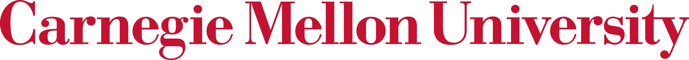
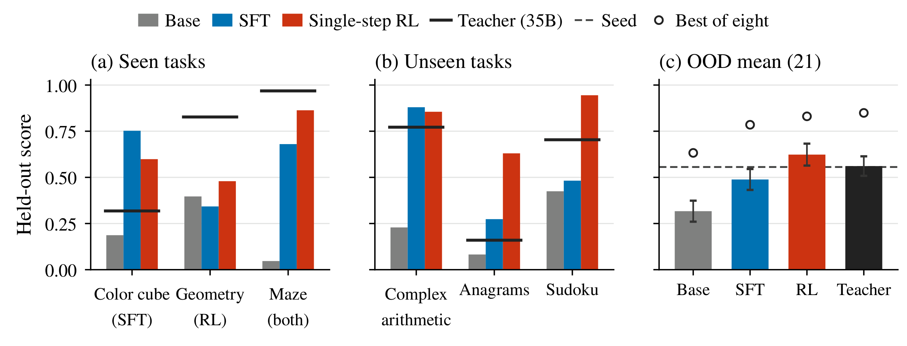
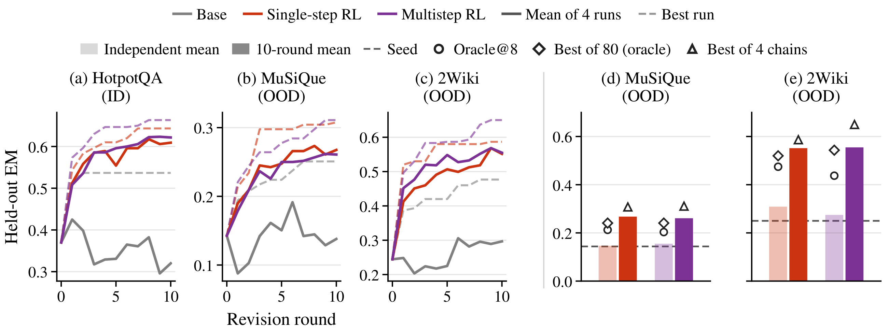
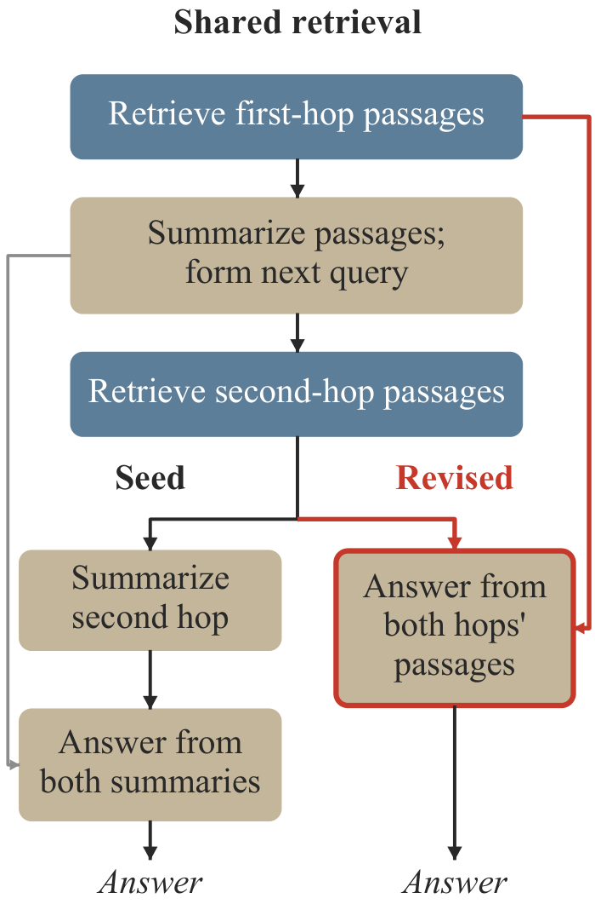

Harness LearningEnables Generalizable Test-Time Adaptation
* Equal contribution. † Project lead. ‡ Equal advising.
Learning to revise the executable program around a language model,
and applying that skill to new tasks with model weights fixed.

Harness learning in 39 seconds
Paper overview ↗Learn to revise code. Adapt to new tasks.
Learn from execution outcomes
During training, revised harnesses run the frozen solver on task questions. Their performance supplies the reward for updating the proposer.
The QA code is a simplified example from the paper. The final charts show aggregate experimental results. Explore the full results ↓
Key results on unseen tasks
0.32→0.62
Better individual revisions
Mean revision score on 21 unseen Reasoning Gym families, from the base to the trained proposer.
0.15→0.27
Further gains through revision
MuSiQue exact match: an independent revision versus ten rounds, using a proposer trained on HotpotQA.
Abstract
A language-model agent is jointly defined by its model and its harness, the executable program that organizes model calls, tool use, and information flow. Because different tasks call for different ways of organizing these operations, the harness needs to be adapted using feedback from the task at hand. We introduce harness learning, which trains a proposer model to revise a solver’s harness using execution feedback. We formulate this process as meta-learning over executable programs, with harness revisions playing the role of weight updates in gradient-based adaptation. We train the proposer with reinforcement learning, using the task performance of revised harnesses as the reward. At test time, the proposer uses feedback from successive executions on a new task to refine the harness, without performing any parameter-space update. Experiments on reasoning and multi-hop question answering show that harness learning improves revision quality and that the ability to adapt at test time transfers to unseen tasks. Policies trained on individual revisions can continue improving harnesses over multiple rounds, while the benefits of training on revision sequences vary across settings. These findings suggest a path towards continually learning agents that turn accumulated experience into generalizable improvements.
How harness learning works
The harness determines how a solver calls tools, processes outputs, and continues or stops execution. We train a proposer to edit this executable program, conditioned on a task description, the current harness, and an execution report.
This gives harness learning a meta-learning interpretation: the harness is the adapted object, and the proposer is the learned adaptation rule.
- During training
- Task performance supplies the reward for reinforcement learning. The reasoning proposer begins with supervised fine-tuning on teacher revisions; the QA proposer trains directly with RL.
- At test time
- The proposer applies the learned revision skill to a new task. Repeated executions provide feedback for further edits. The harness changes, while both models’ parameters remain fixed.
Results
We evaluate two settings with separately trained proposers. Reasoning Gym tests transfer across diverse synthetic task families from a minimal seed harness. Multi-hop QA tests adaptation of an existing retrieval workflow.
Better individual revisions on unseen families
On 21 unseen task families, training raises the mean single-revision score from 0.32 to 0.62. The gain appears in the mean over proposals, so it does not depend on selecting the best candidate. Under the same revision protocol, the trained 4B proposer also exceeds its 35B teacher on average, although the teacher achieves a higher oracle best-of-eight score.

Over successive rounds, proposers trained on individual revisions can continue improving harnesses. On format-varied questions, Single-step RL obtains most of its five-round gain in the first revision, while SFT improves more gradually.
Transfer through successive revision
A proposer trained on HotpotQA transfers to MuSiQue and 2WikiMultihopQA. On both unseen benchmarks, the average final run of each RL proposer exceeds even the oracle best of 80 independent revisions of the seed. A small improvement from one revision can therefore coexist with substantial gains over successive rounds.

Each run uses 80 proposals. The comparison matches proposals per run, while total compute and feedback are not matched. “Single-step RL” and “Multistep RL” identify training configurations; both can revise repeatedly at test time.
What do the learned revisions change?
More reliable candidates
RL reduces the fraction of failed or zero-scoring proposals in both settings. The trained proposer supplies more viable candidates to selection, which may help sustain progress across rounds.

Changes to computation and information flow
Reasoning harnesses commonly introduce interpreter loops, letting the solver express a computation as code and delegate its execution to the runtime.
In QA, a common revision keeps summaries to guide the next retrieval, while passing the original retrieved passages directly to the answering call. This separates the evidence needed to formulate a search from the evidence needed to answer.
These edits change how the harness organizes the solver’s work. Their transfer to unseen tasks suggests that execution outcomes can teach a reusable adaptation skill.
Repeated adaptation from single-revision training
Proposers trained on individual revisions remain useful after earlier edits change the harness and its execution reports. Training on revision sequences does not consistently improve on training on individual revisions. This leaves open whether different intermediate training examples or credit assignment across rounds could make longer revision chains more effective.
Cite this work
@misc{zhang2026harnesslearningenablesgeneralizable,
title={Harness Learning Enables Generalizable Test-Time Adaptation},
author={Alvin Zhang and Xuecheng Liu and Zixuan Wang and Fahim Tajwar and Daman Arora and Ruslan Salakhutdinov and Daniel Khashabi and Yuda Song and Andrea Zanette},
year={2026},
eprint={2609.35738},
archivePrefix={arXiv},
primaryClass={cs.CL},
url={https://arxiv.org/abs/2609.35738},
}